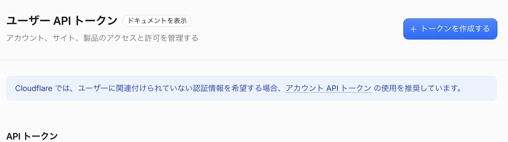
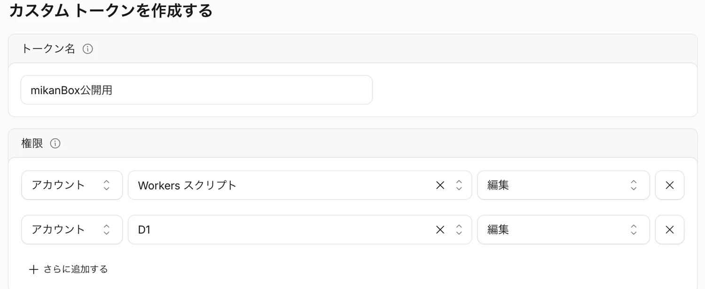
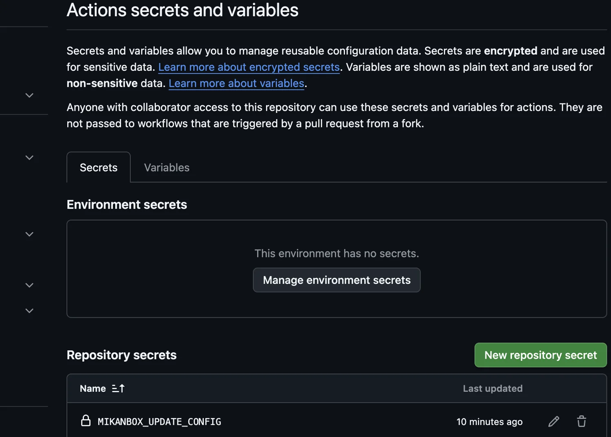
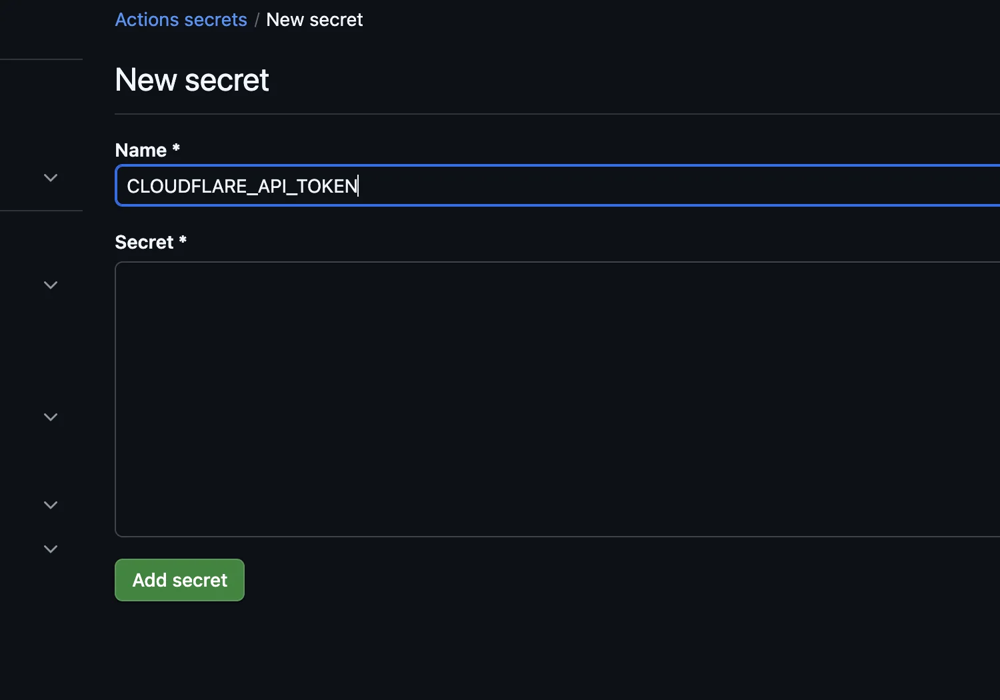
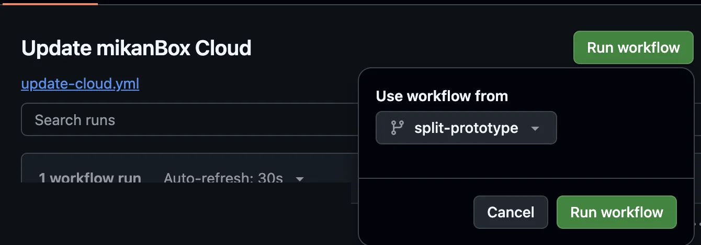
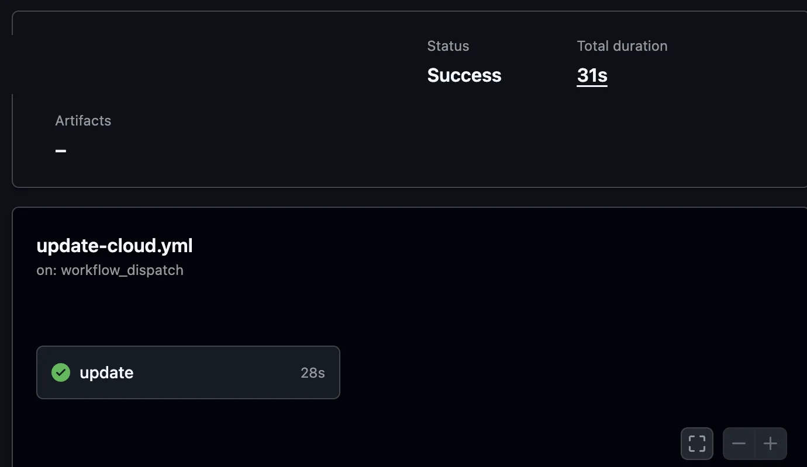
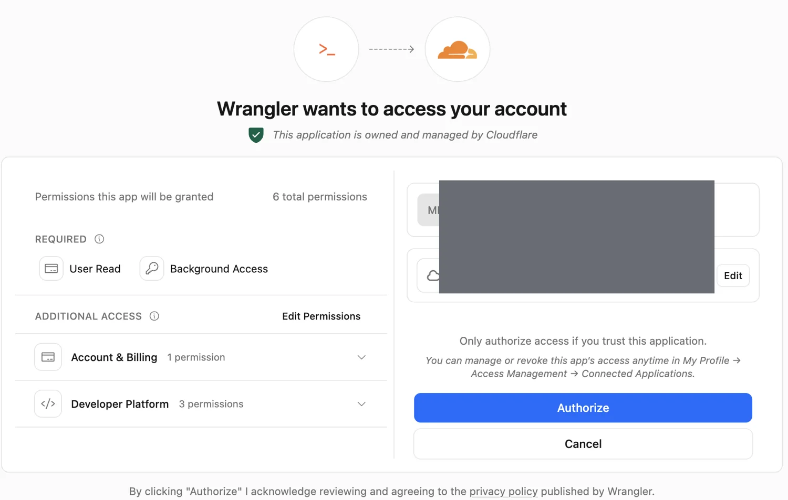

新しいバージョンに
アップデートする
Codexに依頼して更新する方法と、GitHubから手動で更新する方法を説明します。
更新方法を選ぶ
Codexに依頼して更新：GitHubのURLと既存の管理画面URLを伝え、更新を依頼します。Codexが必要なファイルを取得し、Cloudflareログインと更新先を確認して進めます。
GitHub：https://github.com/yoshihik0/mikanBox-cloud
管理画面：（自分の管理画面URL）
CodexからCloudflareの認可を求められた場合は、対象アカウントを確認して許可します。既存の設定が見つからない場合や接続先が確認できない場合は、確認できるまで更新しません。
GitHub Actionsで更新：最初にGitHubとCloudflareの設定を登録します。2回目からは管理画面で更新を確認し、GitHubで実行できます。
ダウンロードして更新：新しいファイルをパソコンにダウンロードし、Cloudflareにログインしてコマンドを実行します。手順を見る →
01 自分のGitHubにコピーする
初回だけリポジトリをフォークする
管理用と公開用のWorkerを分けて設置したサイトが対象です。旧単一Worker構成ではそのまま使えません。GitHubにログインし、mikanBox Cloudflare版のリポジトリを開きます。
- 右上の Fork を押します。
- 所有先に自分のアカウントを選び、Create fork を押します。
- 作成した自分のリポジトリで Actions タブを開き、無効になっていれば有効にします。
- 左側に Update mikanBox Cloud があることを確認します。
すでに自分で管理するリポジトリに更新ワークフローがあれば、それを使えます。ワークフローは既定ブランチに必要です。同じアカウントが制作元の所有者の場合、同じアカウントにフォークは作れません。
02 Cloudflareのトークンを用意する
初回だけ更新に必要な権限を付ける
対象のCloudflareアカウントに Workers スクリプト / 編集 と D1 / 編集 の両方の権限を持つAPIトークンを用意します。管理画面の公開設定に使ったトークンに両方の権限があれば同じものを使えます。別のトークンでも構いません。
- Cloudflareのプロフィールから APIトークン → トークンを作成する を開きます。
- 「カスタムトークンを作成する」の 始める を押し、名前と2つの権限を設定します。
- アカウントリソースで対象アカウントを選び、概要に進む → トークンを作成する を押します。


03 GitHubに更新先を登録する
初回だけ自分のリポジトリでSecretを追加
自分のフォーク先で Settings → Secrets and variables → Actions を開き、New repository secret を押します。次の2件をそれぞれ登録します。

- Nameに
CLOUDFLARE_API_TOKEN、SecretにCloudflareのAPIトークンを入力し、Add secret を押します。 - もう一度 New repository secret を押し、Nameに
MIKANBOX_UPDATE_CONFIG、Secretに設置時のwrangler.production.jsonの全文を入力し、Add secret を押します。

wrangler.production.json は設置時に保存したファイルです。設置した場所によって保存先は異なります。アカウントID、管理Worker名、D1、R2、ルート・独自ドメインが現在のサイトと一致するものを使います。JWT_SECRETやAPIトークンをJSONに追加しないでください。
04 更新を実行する
STEP 01GitHubで実行する
初回は、自分のリポジトリの Actions → Update mikanBox Cloud を開きます。右上の Run workflow を押し、開いたメニューの緑色の Run workflow をもう一度押します。

2回目からは、管理画面の「サイト」で新しいバージョンを確認し、GitHubでアップデート を押すと、この画面を開けます。初回実行が成功するとリンク先が自分のリポジトリに設定されます。
STEP 02結果とバージョンを確認する
実行履歴を開き、処理中の In progress が Success に変わるまで待ちます。管理画面を再読み込みし、現在のバージョン、記事、画像を確認します。

Failure の場合は、失敗した工程を開いて原因を確認します。設定や権限を修正した後に再実行できます。DBの変更とWorkerの更新は別工程のため、途中で失敗した場合はDBだけ更新済みの場合があります。
知っておくこと公開サイトの更新
Actionsが更新するのは管理用Workerです。公開ページや画像の変更は、管理画面の 静的サイトをビルド で配信します。公開側の配信処理が変わる場合は、リリースの案内を確認してください。
Actionsは実行のたびに制作元の最新公開リリースを取得します。公開プレリリースも対象です。フォークのワークフロー自体は自動では更新されません。Workers Buildsなど別の自動デプロイ設定がある場合は、そちらも確認してください。
別の方法：ダウンロードして更新
OPTIONパソコンから更新する
- リリース一覧から新しいリリースの Source code (zip) をダウンロードして展開します。
- 展開したフォルダに、現在のサイトと一致する
wrangler.production.jsonを用意します。管理Worker、アカウント、D1/R2、ルートを確認します。 - そのフォルダのターミナルで次を順に実行します。認可画面が開いたら対象アカウントを確認して Authorize を押します。
npm ci
npx wrangler login
npx wrangler whoami
アカウントを確認してから、次を実行します。
npx wrangler d1 migrations apply DB --remote --config wrangler.production.json
npx wrangler deploy --config wrangler.production.json --keep-vars管理画面を再読み込みし、バージョン、記事、画像を確認します。既存サイトの認証用秘密は作り直さず、公開用初期ページも再デプロイしません。